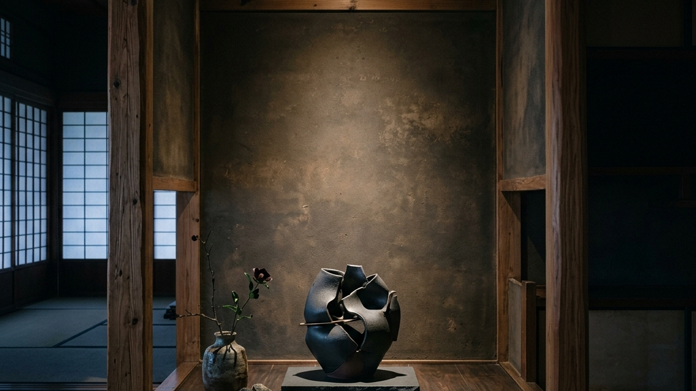
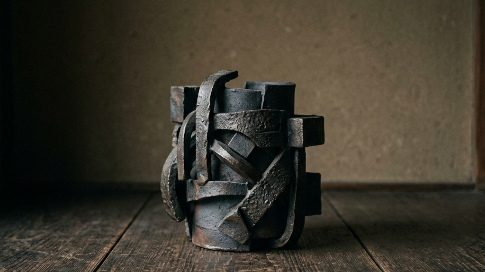
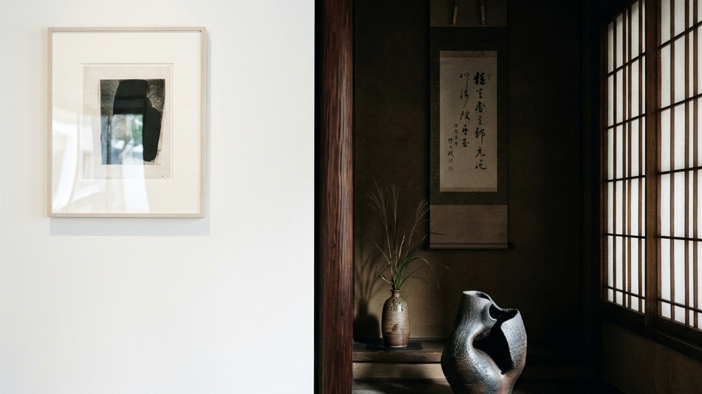
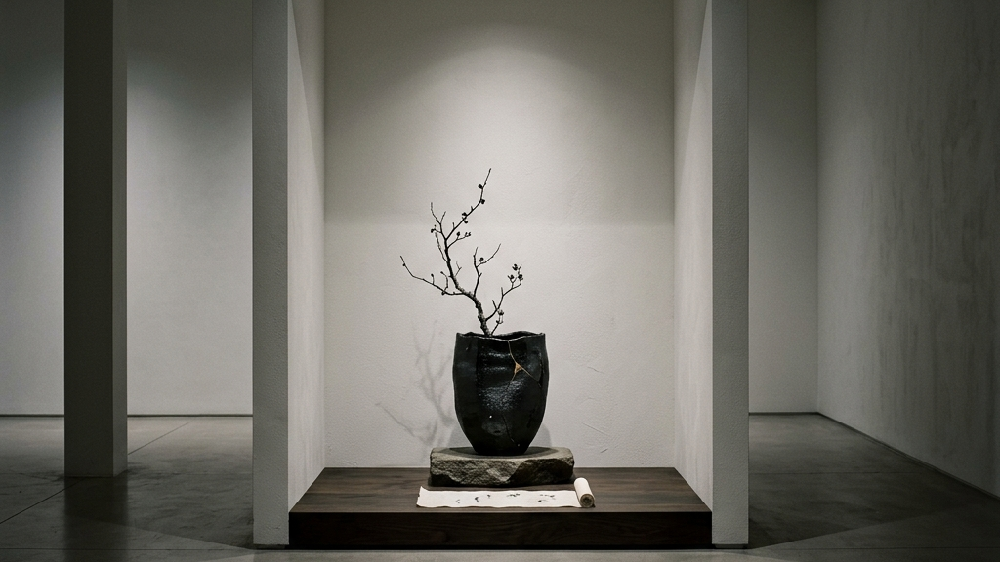
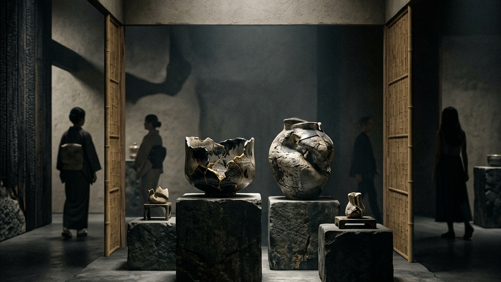
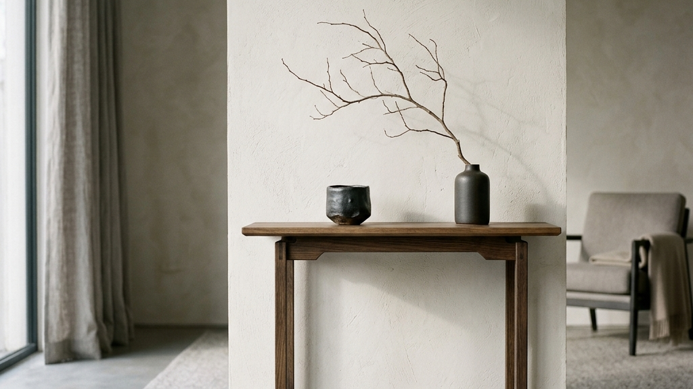

和室の奥に鎮座する「床の間」。かつてそれは、掛け軸や生け花を通じて季節や客人を迎え入れる、家屋の中で最も神聖な結界でした。しかし、ライフスタイルの変化とともに、その空間はただの飾り棚へと変容し、あるいは間取り図から静かに姿を消しつつあります。
私たちKakeraは、伝統工芸品を「1,000年先の未来へ遺す資産」として捉え直す中で、この「空間の喪失」という現実に直面してきました。失われゆくのは物理的な畳の部屋ではなく、日常の中に「余白」と「祈り」を置くための精神的な装置です。
【本稿で紐解く3つの核心】
本稿では、藝大アートプラザで開催された企画展「THE ART OF TEA」の事例を手がかりに、床の間という概念の脱構築と、現代アートを用いた空間の再定義について深く考察します。それは単なるインテリアの提案ではありません。情報が飽和し、効率化が極限まで求められる現代社会において、私たちが取り戻すべき「静寂の知層」へのアプローチです。

かつての日本の家屋において、床の間は単なる建築のいち要素ではありませんでした。
茶の湯の文化とともに室町時代に確立されたその空間は、亭主が客人を想い、一期一会の場を設えるための「精神的な結界」でした。掛け軸の書画を読み解き、そこに生けられた一輪の花に季節の移ろいを見る。それは、沈黙が語る日本の美学の極致であり、効率とは無縁の豊かな対話の装置として機能してきたのです。
しかし、現代の均質化された住環境において、床の間は次第にその役割を見失っています。掛け軸の選び方が分からない、作法に縛られたくない。そんな心理的なハードルが、私たちを豊かな余白から遠ざけています。
「床の間とは、日常における非日常へのポータルである。何を置くかではなく、そこに『余白』を設けること自体に意味がある」
— 空間と精神の連関について
だからこそ、私たちは一度、掛け軸という「正解」を手放す必要があります。空間の再編が提示する新しい文脈において、床の間はもっと自由で、個人的な祈りの場であって良いはずです。
例えば、現代アートのオブジェや、抽象的な立体作品をそこに置いてみる。作法や流派の文脈から切り離された、純粋な「物質と空間の対話」が始まります。それは、かつて千利休が見出した「見立て」の精神そのものです。

掛け軸を手放し、現代アートを床の間に迎え入れようとした時、私たちはある決定的な「違和感」に直面します。それは、お気に入りの西洋絵画や額装されたアートパネルをそのまま和室に持ち込んだ際に生じる、空間との致命的な不協和音です。
なぜ、洗練された現代アートが、和室の床の間では突然その魅力を失ってしまうのでしょうか。その答えは、西洋の「壁」と日本の「床の間」が持つ、根本的な構造的差異に隠されています。
| 空間構造 | 光の捉え方 | 視線の前提 |
|---|---|---|
| 西洋の壁（美術館） | 均質な人工照明で作品全体を「照射」する | 立った状態（立礼）での正面からの鑑賞 |
| 日本の床の間 | 障子越しの自然光による「陰翳」を取り込む | 座布団に座った状態（座礼）での低い視線 |
西洋のアートは本来、壁面に掛けられ、豊富な光を正面から受けることを前提に構成されています。一方、日本の床の間は、谷崎潤一郎が『陰翳礼讃』で説いたように、薄暗い空間の中で「影」を愛でるための装置です。光を反射するガラスの額装や、強烈な色彩のキャンバスをそこに置くと、空間の静寂（ノイズレスな状態）が一瞬にして破壊されてしまうのです。
だからこそ、床の間に現代アートを「見立てる」ためには、単にモノを置くのではなく、この工芸的強度への回帰を踏まえた、空間全体へのチューニングが必要になります。光を乱反射しないマットな質感のオブジェを選ぶこと。あるいは、あえて低い位置に立体作品を置き、上部から落ちる柔らかな影のグラデーションを意図的に創り出すこと。
これは、単なるインテリアのテクニックではありません。西洋的な「すべてを明るく見せる」という足し算の価値観から離れ、自らの手で「見えない部分（影）にこそ価値を見出す」という、極めて能動的で知的なプロセスなのです。

床の間の概念が家屋から失われゆく一方で、逆説的ですが、現代のギャラリー空間は「巨大な白紙の床の間」として機能し始めています。
ホワイトキューブと呼ばれる無機質な展示室は、作品そのものと向き合うための極限までノイズを削ぎ落とした空間です。ここに、日本の美意識である「引き算の美学」を持ち込むことで、展示はただの鑑賞から、茶の湯的な「体験」へと昇華します。
茶道とギャラリー展示の共鳴点
この文脈において、陰翳と現代アートの航海のように、光と影の移ろいすらも作品の一部として取り込む試みが増えています。ギャラリーに足を踏み入れた瞬間、私たちは無意識のうちに「露地（茶室へ至る道）」を通り、静謐な茶席へと招かれているのです。

まさにその「茶の湯」のアプローチを現代のギャラリー空間で具現化したのが、藝大アートプラザで開催された企画展「THE ART OF TEA」です。
この展示の特筆すべき点は、「ギャラリーがひとつの『床の間』に変わる」という強烈なコンセプトを掲げたことです。建築と現代アートの静寂なる対話のように、そこには単なる茶道具の陳列を超えた、空間全体のコンセプチュアルな再構築がありました。
伝統的な茶の湯の道具（茶碗、水指など）を、現役のアーティストたちが全く新しい解釈で制作。素材の限界に挑むことで、工芸とアートの境界線を溶かしました。
ギャラリーという西洋的でフラットな空間に、見えない「結界」や「にじり口」を想起させる動線を設計し、空間そのものを床の間へと変容させました。
私たちがこの展示から学ぶべきは、「引き算の美学」が持つ圧倒的な強度です。要素を足すことで価値を生み出す現代のタイパ至上主義に対して、削ぎ落とし、沈黙させることで鑑賞者の内側に豊かな「知層」を呼び覚ます。これこそが、1,000年先の未来へ遺すべき非効率な美しさの正体です。

では、この「茶の湯」のアプローチを、私たちの日常空間にどう取り入れれば良いのでしょうか。
和室がないからといって、落胆する必要はありません。建築と伝統工芸の新たな融和が示すように、現代の住環境における「床の間」は、部屋の片隅の小さなテーブルの上や、壁のわずかな余白にすら創り出すことができます。
必要なのは、そこを「特別な空間」であると見立てる個人的な決意だけです。
例えば、日々の生活ノイズから切り離されたコンソールテーブルに、心惹かれた現代アートの小さなオブジェを一つだけ置く。その隣に、季節の枝物を無造作に挿す。それだけで、その空間はあなただけの「床の間」として機能し始めます。アートが放つ静謐なエネルギーが、効率や数値目標に追われる日常に、ふと立ち止まるための強制的な「余白」を生み出すのです。
私たちKakeraが守ろうとしているのは、単なる工芸品の「モノ」としての形ではありません。その根底に流れる、不便さや非効率を受け入れ、そこから精神的な充足を見出す「哲学」そのものです。
ギャラリーがひとつの床の間に変わるように、私たちの日常もまた、ひとつのアートによって劇的に再定義されます。情報という濁流の中で自己を見失いそうになった時こそ、この「引き算の空間」が、あなた自身の精神をチューニングする静かな防波堤となるはずです。
Reference:
ギャラリーがひとつの “床の間” に変わる。 藝大アートプラザ企画展 THE ART OF TEA
伝統を身に纏い、1,000年先の未来へ遺す。Kakeraが織り上げる西陣織アロハシャツの哲学と私たちの物語は、CONCEPT、Kakera Aloha、およびABOUTよりご覧いただけます。